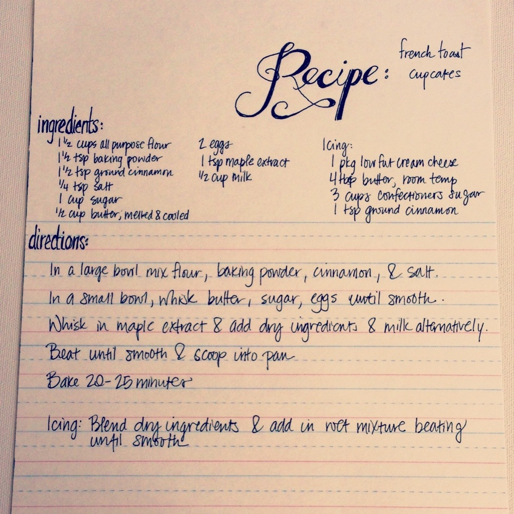

French toast is much older than its name suggests — a version appears in Apicius, a Roman cookbook from the 4th or 5th century, where stale bread is soaked in milk and egg and fried in oil. By the medieval period it had spread across Europe under dozens of names (pain perdu in France, "poor knights" in England and Germany), almost all of them a way to rescue bread that was going stale. The American breakfast version, drenched in butter, maple syrup, and cinnamon, is a 19th-century descendant of those thrift dishes.
What makes this card unusual is the format. The recipe turns a griddle dish into a cupcake — folding the flavor profile of breakfast (cinnamon, maple, a cream cheese "icing" that reads like a Danish glaze) into a baking-powder cake. That mashup is very much a product of the 2010s food-blog era, when classic breakfast flavors started showing up in cupcake, donut, and pancake-stack form. The maple extract instead of syrup is the giveaway: it concentrates flavor without adding moisture, which is a baker's trick rather than a cook's.